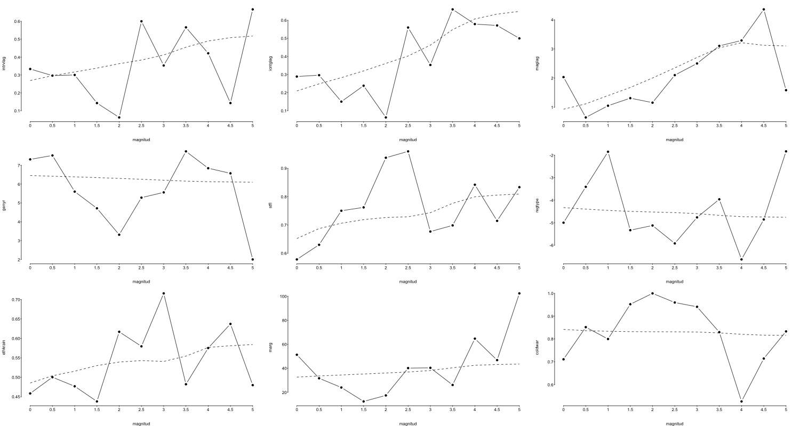
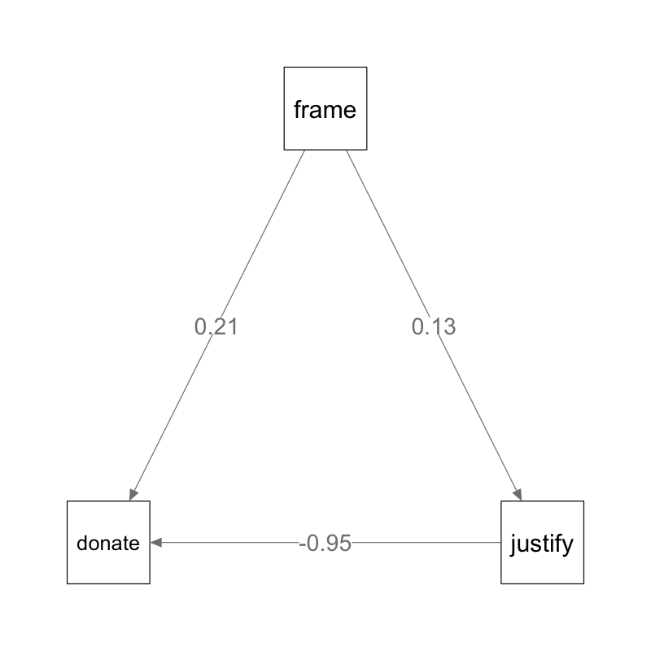
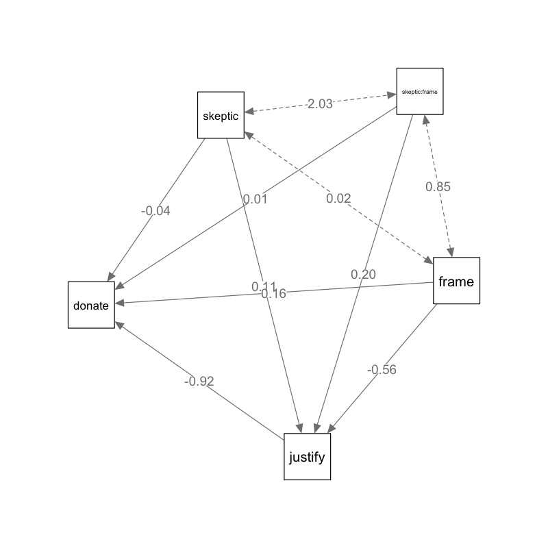
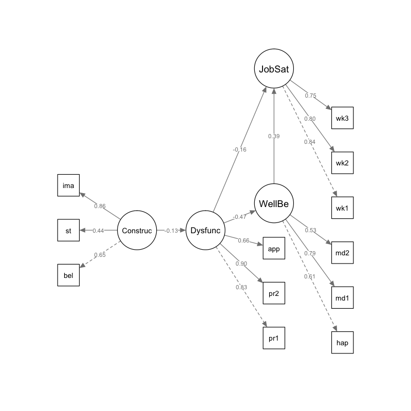

定量研究方法R语言操作示例
1 logistic回归
1.1 美国参议院投票（Who Likes Political Science? Uscinski and Klofstad, 2010）
- 2009年10月共和党参议员Tom Coburn提交修正案建议美国国家科学基金停止资助政治科学研究。该修正案在11月被投票否决。Uscinski和Klofstad采用这次投票的数据分析参议员的个人特质、选区特征和制度特征对他们投票的影响。
采用glm函数估计logit模型的参数
library(foreign) coburn <-read.dta("coburn.dta") # 单个解释变量：党派 single.glmfit<-glm(formula = voteno ~ democrat, family="binomial", data=coburn) # 多个解释变量： # 个人特征变量：党派、性别、大学是否政治学专业； # 选区特征变量：政治科学排名前20的大学数量、排名前50的大学数量、具有高等教育学历人口比例、请愿次数、基金资助数量 # 制度特征变量：党派、下次竞选连任的时间（年）、相关委员会成员、参议员资历 multiple.glmfit<-glm(voteno ~ democrat + female + poliscimajor + # 个人特征 top20phd+top50phd+phdprograms+ advancedpercent + petitioners + nsfgrants + # 选区特征 yearstoelection +hhsera + seniority, family="binomial", data=coburn) # 制度特征 # （可选）获取与文章相同的由州群变量调整后的标准误 library(miceadds) cluster.glmfit <- glm.cluster(voteno ~ democrat+ female + poliscimajor + top20phd+top50phd+phdprograms+ advancedpercent + petitioners + nsfgrants+ yearstoelection +hhsera + seniority, cluster = coburn$statename, family="binomial", data=coburn) res <- summary(cluster.glmfit) library(stargazer) stargazer(single.glmfit, multiple.glmfit, multiple.glmfit, title = "Replication of Table 1 in Uscinski and Klofstand (2010)", covariate.labels=c( "Gender (Female)","Political Science Major in College", "Number of Top 20 Political Science Programs", "Number of Top 50 Political Science Programs", "Total Number of Political Science Programs", "Percentage with Advanced Degrees", "Number of Amendment Petitioners", "Number of NSF Grants 2008", "Party Identification (Democrat)", "Years to Next Election", "Member of Labor HHS Subcommittee", "Seniority"), column.labels=c("single IV","mutiple IVs","clustered se"), order = c("female","poliscimajor","top20phd","top50phd","phdprograms", "advancedpercent","petitioners","nsfgrants","democrat", "yearstoelection","hhsera","seniority"), star.cutoffs=NA, digits=2, dep.var.labels = "Vote Nay on Coburn Amendment", se=list(NULL,NULL,res[,2]), type = "text")
Estimate Std. Error z value Pr(>|z|) (Intercept) -3.7812381216 1.7925365 -2.109434365 0.034907106 democrat 3.2957356132 1.0690272 3.082929474 0.002049737 female -0.4082100527 1.2788667 -0.319196713 0.749577350 poliscimajor 1.1641776454 0.6283475 1.852760729 0.063916661 top20phd 2.0802374417 0.7745464 2.685749379 0.007236735 top50phd 1.0225832453 0.6068247 1.685137810 0.091961986 phdprograms -0.1829973583 0.3594246 -0.509139754 0.610654268 advancedpercent 2.3540232786 1.1921320 1.974633135 0.048309796 petitioners -0.0114212731 0.0143187 -0.797647326 0.425075179 nsfgrants 0.1570781015 0.2546681 0.616795398 0.537369688 yearstoelection 0.4857686583 0.2651756 1.831875131 0.066970026 hhsera 1.3861200138 0.8623678 1.607342071 0.107979350 seniority -0.0002187281 0.0532744 -0.004105689 0.996724143 Replication of Table 1 in Uscinski and Klofstand (2010) ============================================================================== Dependent variable: ---------------------------------- Vote Nay on Coburn Amendment single IV mutiple IVs clustered se (1) (2) (3) ------------------------------------------------------------------------------ Gender (Female) -0.41 -0.41 (0.98) (1.28) Political Science Major in College 1.16 1.16 (0.91) (0.63) Number of Top 20 Political Science Programs 2.08 2.08 (1.00) (0.77) Number of Top 50 Political Science Programs 1.02 1.02 (0.77) (0.61) Total Number of Political Science Programs -0.18 -0.18 (0.43) (0.36) Percentage with Advanced Degrees 2.35 2.35 (1.25) (1.19) Number of Amendment Petitioners -0.01 -0.01 (0.02) (0.01) Number of NSF Grants 2008 0.16 0.16 (0.35) (0.25) Party Identification (Democrat) 3.12 3.30 3.30 (0.58) (0.85) (1.07) Years to Next Election 0.49 0.49 (0.23) (0.27) Member of Labor HHS Subcommittee 1.39 1.39 (0.97) (0.86) Seniority -0.0002 -0.0002 (0.04) (0.05) Constant -0.80 -3.78 -3.78 (0.33) (1.60) (1.79) ------------------------------------------------------------------------------ Observations 98 98 98 Log Likelihood -42.84 -30.63 -30.63 Akaike Inf. Crit. 89.67 87.26 87.26 ============================================================================== Note: NA
- 系数解释：尽量不要直接采用odds ratio来解释，而是要采用假定的情形直接比较概率
# 假想情形1：大学是政治科学专业的参议员，其他变量都取平均值 simdata.max <- with(coburn, data.frame( female=mean(female), poliscimajor=max(poliscimajor), # 求边际效应的变量 top20phd=mean(top20phd), top50phd=mean(top50phd), phdprograms=mean(phdprograms), advancedpercent=mean(advancedpercent), petitioners=mean(petitioners), nsfgrants=mean(nsfgrants), democrat=mean(democrat), yearstoelection=mean(yearstoelection), hhsera=mean(hhsera), seniority=mean(hhsera) )) # 假想情形2：大学不是政治科学专业的参议员，其他变量都取平均值 simdata.min <- with(coburn, data.frame( female=mean(female), poliscimajor=min(poliscimajor), # 求边际效应的变量 top20phd=mean(top20phd), top50phd=mean(top50phd), phdprograms=mean(phdprograms), advancedpercent=mean(advancedpercent), petitioners=mean(petitioners), nsfgrants=mean(nsfgrants), democrat=mean(democrat), yearstoelection=mean(yearstoelection), hhsera=mean(hhsera), seniority=mean(hhsera) )) #大学是政治科学专业的参议员投反对票的概率： predict(multiple.glmfit, newdata = simdata.max, type="response") #大学不是政治科学专业的参议员投反对票的概率： predict(multiple.glmfit, newdata = simdata.min, type="response")
1
0.9243175
1
0.7922154
- 模型评价：可以采用正确率和ROC图
# 预测值 predicted<-fitted(multiple.glmfit) pred <- ifelse(predicted>=0.5, 1, 0) # 观察值 actual<-as.numeric(multiple.glmfit$model$voteno) # 频数交叉表 table(pred,actual) # 计算正确率 sum(pred==0 & actual==0, pred==1 & actual==1) /length(actual)
actual
pred 0 1
0 27 8
1 7 56
[1] 0.8469388
- 比较单变量模型与多变量模型的预测效果，与对角线围成面积越大效果越好
library(ROCR) # 准备预测评价数据（多变量模型） pred<-prediction(predicted,actual) perf<-performance(pred,"tpr","fpr") # 准备预测评价数据（单变量模型） predsimp<-prediction(fitted(single.glmfit),actual) perf.simp<-performance(predsimp,"tpr","fpr") plot(perf,main="ROC plots for competing models", bty="n",lwd=2) plot(perf.simp, lwd=2, col=grey(0.7), add=T) lines(actual,actual, lty="dashed")

2 有序logistic回归
2.1 国际干预与种族清洗（Krain, 2005）
- 检验国际军事干预对种族清洗的影响，结果显示只有挑战作恶者和帮助受害族群两种军事干预方式是有效的。
- 因变量种族清洗的严重程度（magnitud）是11级的有序类别变量。
- 解释变量包括干预（intrvlag）、支持作恶者的干预（iperplag）、反对作恶者的干预（itarglag）、中立性干预（ineutlag）、干预的平衡性（iballag）
- 控制变量包括干预的连续性（icntglag）、种族清洗的严重性（maglag）、种族清洗持续时间（genyr）、是否国家失败（stfl）、政权类型（regtype）、种族分散程度（ethkrain）、经济边缘化程度（marg）、是否冷战时期（coldwar）数据
- 模型估计，第一个模型为线性模型（虽然采取glm估计），第2-4个模型分别对不同类型的军事干预进行检验
- 有序类别变量能否作为尺度变量进行线性回归？类别的数量足够大，每个类别中的观测数量大致相当。
- 似然比、AIC、BIC都显示OLS的样本内拟合效果比有序logit回归更好。而估计的分割点与其标准误相比，距离都很近，说明相邻类别之间很难区分，可以将因变量看做连续变量。
library(foreign) krain<-read.dta("isq05.dta",convert.dates = TRUE, convert.factors = TRUE, missing.type = FALSE, convert.underscore=TRUE, warn.missing.labels=TRUE) # 有序logit回归，采用MASS包中的polr函数进行 ols.fit <- glm(magnitud ~ intrvlag+icntglag+maglag+genyr+stfl+regtype+ethkrain+marg+coldwar,data=krain) library(MASS) polr.fit1<-polr(as.ordered(magnitud) ~ intrvlag+icntglag+maglag+genyr+stfl+regtype+ethkrain+marg+coldwar, data=krain, method="logistic", Hess=T) polr.fit2<-polr(as.ordered(magnitud) ~ iperplag+itarglag+ineutlag+icntglag+maglag+genyr+stfl+regtype+ethkrain+marg+coldwar, data=krain, method="logistic", Hess=T) polr.fit3<-polr(as.ordered(magnitud) ~ iballag+ineutlag+icntglag+maglag+genyr+stfl+regtype+ethkrain+marg+coldwar, data=krain, method="logistic", Hess=T) library(stargazer) stargazer(ols.fit, polr.fit1, polr.fit2, polr.fit3, covariate.labels=c("干预", "支持作恶者的干预", "反对作恶者的干预", "中立性干预", "干预的平衡性","干预的连续性", "种族清洗严重性", "种族清洗持续时间", "国家失败", "政权类型", "种族分散程度", "经济边缘程度", "冷战"), order = c("intrvlag","iperplag","itarglag","ineutlag","iballag","ineutlag","icntglag","maglag", "genyr","stfl","regtype","ethkrain","marg","coldwar"), digits = 2, keep.stat = c("n"), add.lines=list(c("Log Likelihood", round(logLik(ols.fit),1), round(logLik(polr.fit1),1), round(logLik(polr.fit2),1),round(logLik(polr.fit3),1)), c("Akaike Inf. Crit.", round(AIC(ols.fit),1), round(AIC(polr.fit1),1), round(AIC(polr.fit2),1),round(AIC(polr.fit3),1))), ord.intercepts=T, type = "text")
=====================================================
Dependent variable:
-----------------------------------
magnitud magnitud
normal ordered
logistic
(1) (2) (3) (4)
-----------------------------------------------------
干预 0.23 0.13
(0.22) (0.30)
支持作恶者的干预 -0.06
(0.10)
反对作恶者的干预 -0.38***
(0.14)
中立性干预 -0.71** -0.58*
(0.34) (0.33)
干预的平衡性 0.05
(0.09)
干预的连续性 0.39* 0.57* 1.14*** 0.73***
(0.22) (0.30) (0.30) (0.24)
种族清洗严重性 0.42*** 0.72*** 0.73*** 0.71***
(0.06) (0.10) (0.10) (0.10)
种族清洗持续时间 -0.05*** -0.07*** -0.09*** -0.08***
(0.02) (0.03) (0.03) (0.03)
国家失败 0.44** 0.54** 0.47* 0.54**
(0.19) (0.27) (0.27) (0.27)
政权类型 -0.01 -0.01 -0.01 -0.01
(0.02) (0.02) (0.02) (0.02)
种族分散程度 0.78** 0.49 0.39 0.49
(0.38) (0.51) (0.51) (0.51)
经济边缘程度 0.0004 -0.0004 -0.001 -0.001
(0.001) (0.002) (0.002) (0.002)
冷战 0.03 -0.27 -0.63 -0.56
(0.24) (0.36) (0.39) (0.39)
0| 0.5 -0.33 -0.95 -0.75
(0.57) (0.60) (0.59)
0.5| 1 0.34 -0.27 -0.07
(0.56) (0.60) (0.59)
1| 1.5 0.80 0.19 0.38
(0.56) (0.60) (0.59)
1.5| 2 1.25** 0.64 0.83
(0.57) (0.60) (0.60)
2| 2.5 1.60*** 0.98 1.18*
(0.58) (0.61) (0.60)
2.5| 3 2.12*** 1.51** 1.70***
(0.59) (0.62) (0.61)
3| 3.5 2.84*** 2.24*** 2.43***
(0.60) (0.62) (0.62)
3.5| 4 4.35*** 3.80*** 3.95***
(0.62) (0.64) (0.63)
4| 4.5 5.45*** 4.94*** 5.06***
(0.65) (0.68) (0.67)
4.5| 5 6.29*** 5.79*** 5.90***
(0.72) (0.74) (0.74)
Constant 0.50
(0.41)
-----------------------------------------------------
Log Likelihood -449 -564.5 -560.2 -562.9
Akaike Inf. Crit. 920 1167 1162.4 1165.8
Observations 273 273 273 273
=====================================================
Note: *p<0.1; **p<0.05; ***p<0.01
2.2 平行性检验
- 如果不能通过平行性检验，一般可以采用多项logistic回归，忽略因变量类别间的有序关系，但是估计的系数会成倍增多。
library(rms) krain$magnitud<-as.numeric(krain$magnitud) par(mfrow=c(3,3),mar=c(4,4.2,1,1),las=1) plot.xmean.ordinaly(magnitud ~ intrvlag + icntglag + maglag + genyr + stfl + regtype + ethkrain + marg + coldwar, data=krain,pch=19)

2.3 系数解释
- 尽量采用假想情形去解释系数的效应
simdata.max <- with(krain, data.frame( iperplag= mean(iperplag), itarglag= 1, ineutlag= mean(ineutlag), icntglag=mean(icntglag), maglag=mean(maglag), genyr=mean(genyr), stfl=mean(stfl), regtype=mean(regtype), ethkrain=mean(ethkrain), marg=mean(marg), coldwar=mean(coldwar) )) simdata.min <- with(krain, data.frame( iperplag= mean(iperplag), itarglag= 0, ineutlag= mean(ineutlag), icntglag=mean(icntglag), maglag=mean(maglag), genyr=mean(genyr), stfl=mean(stfl), regtype=mean(regtype), ethkrain=mean(ethkrain), marg=mean(marg), coldwar=mean(coldwar) )) predict(polr.fit2, newdata= simdata.max, type = "probs") predict(polr.fit2, newdata= simdata.min, type = "probs")
0 0.5 1 1.5 2 2.5
0.125708406 0.095519875 0.088290407 0.104399207 0.084740959 0.129117226
3 3.5 4 4.5 5
0.150568754 0.165258216 0.037623548 0.010645023 0.008128379
0 0.5 1 1.5 2 2.5 3
0.08956553 0.07316841 0.07198168 0.09107305 0.07916490 0.13078177 0.17037027
3.5 4 4.5 5
0.21355820 0.05313349 0.01536700 0.01183569
3 调节效应、中介效应和条件过程模型
3.1 示例：气候变化与灾害Chapman and Lickel 2015
- 研究者向211名实验参与者讲述非洲发生干旱造成人道主义危机，告诉其中一半的参与者气候变化是造成干旱的原因，另一半参与者未被告知任何关于干旱的原因。接着通过一系列问题让实验参与者评价拒绝援助的正当性，以及了解他们对气候变化的怀疑程度。最后了解参与者捐款的意愿。
- 实验的目的是了解框架（frame），即是否告知干旱是由于气候变化产生的，对捐助意愿(donate)的影响（数据）
3.2 调节效应
- 假定对气候变化怀疑程度较高的人框架对捐助意愿的效应也比较小，会存在调节效应。
# 加载程序包lavaan library(lavaan) disaster <- read.csv("disaster.csv", header = T) # 调节效应 moderafit <- lm(donate ~ frame + skeptic + frame:skeptic, data = disaster) summary(moderafit)
Call:
lm(formula = donate ~ frame
skeptic
frame:skeptic, data = disaster)
Residuals:
Min 1Q Median 3Q Max
-3.8341 -0.7077 0.1659 0.9101 2.6682
Coefficients:
Estimate Std. Error t value Pr(>|t|)
(Intercept) 5.02947 0.22632 22.223 <2e-16 ***
frame 0.67930 0.33091 2.053 0.0413 *
skeptic -0.13953 0.05790 -2.410 0.0168 *
frame:skeptic -0.17071 0.08393 -2.034 0.0432 *
---
Signif. codes: 0 ‘***’ 0.001 ‘**’ 0.01 ‘*’ 0.05 ‘.’ 0.1 ‘ ’ 1
Residual standard error: 1.234 on 207 degrees of freedom
Multiple R-squared: 0.1343, Adjusted R-squared: 0.1218
F-statistic: 10.71 on 3 and 207 DF, p-value: 1.424e-06
3.3 中介效应
- 另一方面，框架可能是通过影响正当性，然后正当性再影响捐助意愿的，即中介效应。
# 中介效应 mediamodel <- ' # 直接效应 donate ~ c*frame # 中介效应 justify ~ a*frame donate ~ b*justify # 间接效应 (a*b) ab := a*b # 总效应 total := c + (a*b) ' mediafit <- sem(mediamodel, data = disaster) summary(mediafit)
lavaan 0.6-3 ended normally after 17 iterations
Optimization method NLMINB
Number of free parameters 5
Number of observations 211
Estimator ML
Model Fit Test Statistic 0.000
Degrees of freedom 0
Minimum Function Value 0.0000000000000
Parameter Estimates:
Information Expected
Information saturated (h1) model Structured
Standard Errors Standard
Regressions:
Estimate Std.Err z-value P(>|z|)
donate ~
frame (c) 0.212 0.135 1.576 0.115
justify ~
frame (a) 0.134 0.127 1.054 0.292
donate ~
justify (b) -0.953 0.072 -13.159 0.000
Variances:
Estimate Std.Err z-value P(>|z|)
.donate 0.948 0.092 10.271 0.000
.justify 0.856 0.083 10.271 0.000
Defined Parameters:
Estimate Std.Err z-value P(>|z|)
ab -0.128 0.122 -1.051 0.293
total 0.084 0.181 0.463 0.643
- 绘制图形
library("semPlot") semPaths(mediafit,whatLabels = 'est',residuals = F, nCharNodes=0, sizeMan = 12,edge.label.cex = 1.5)

3.4 条件过程模型
- 综合调节与中介效应，框架对捐助意愿的直接和间接效应是受到怀疑程度的调节的，即被调节的中介效应。
# 具有调节中介效应的条件过程模型 cpmodel <- ' # 直接效应 donate ~ c1*frame + c2*skeptic + c3*skeptic:frame # 中介效应 justify ~ a1*frame + a2*skeptic + a3*skeptic:frame donate ~ b*justify # 间接效应取决于skeptic的值，需要用平均值（或其他代表值）带入计算间接效应 # 间接效应 (a*b) skeptic取平均值3.38 a1b := (a1+a3*3.38)*b # 总效应 total := c1 + (a1+a3*3.38)*b ' cpfit <- sem(cpmodel, data = disaster) summary(cpfit)
lavaan 0.6-3 ended normally after 23 iterations
Optimization method NLMINB
Number of free parameters 9
Number of observations 211
Estimator ML
Model Fit Test Statistic 0.000
Degrees of freedom 0
Parameter Estimates:
Information Expected
Information saturated (h1) model Structured
Standard Errors Standard
Regressions:
Estimate Std.Err z-value P(>|z|)
donate ~
frame (c1) 0.160 0.264 0.606 0.544
skeptic (c2) -0.043 0.046 -0.918 0.359
skptc:frm (c3) 0.015 0.068 0.219 0.827
justify ~
frame (a1) -0.562 0.216 -2.606 0.009
skeptic (a2) 0.105 0.038 2.782 0.005
skptc:frm (a3) 0.201 0.055 3.675 0.000
donate ~
justify (b) -0.923 0.083 -11.113 0.000
Variances:
Estimate Std.Err z-value P(>|z|)
.donate 0.943 0.092 10.271 0.000
.justify 0.648 0.063 10.271 0.000
Defined Parameters:
Estimate Std.Err z-value P(>|z|)
a1b -0.108 0.103 -1.054 0.292
total 0.052 0.285 0.182 0.856
- 图形
semPaths(cpfit,whatLabels = 'est', layout = "spring",,residuals = F, nCharNodes=0, sizeMan = 8,edge.label.cex = 1)

4 结构方程
4.1 示例：思维方式与工作满意度Houghton and Jinkerson, 2007
- Houghton and Jinkerson (2007) 设定了4个因子，12个指标的结构回归模型。考察大学职员的思维方式对工作满意度的影响。
- 理论假设：
- 主观幸福感与工作满意度正相关；
- 障碍性思维过程与主观幸福感负相关；
- 建设性思维与障碍性思维负相关；
- 障碍性思维与工作满意度负相关；
- 主观幸福感在障碍性思维和工作满意度之间发挥部分中介效应；
- 障碍性思维和主观幸福感在建设性思维和工作满意度之间发挥完全中介效应。
- 模型的建构与修正
- 依据理论或有关假设，提出一个或数个合理的先验模型；
- 检查潜变量（因子）与指标（题目）间的关系，建立测量模型，有时可能增删或重组题目；
- 对每一个模型，检查标准误、t值、标准化残差、修正指数、及各种拟合指数，据此修改模型并重复这一步；
- 最好用另外一个样本进行检验。
library(lavaan) # 整理数据，直接获取协方差矩阵和样本量作为输入数据，也可采取原始数据方式 ## 相关系数矩阵 houghtonLower.cor <- ' 1.000 .668 1.000 .635 .599 1.000 .263 .261 .164 1.000 .290 .315 .247 .486 1.000 .207 .245 .231 .251 .449 1.000 -.206 -.182 -.195 -.309 -.266 -.142 1.000 -.280 -.241 -.238 -.344 -.305 -.230 .753 1.000 -.258 -.244 -.185 -.255 -.255 -.215 .554 .587 1.000 .080 .096 .094 -.017 .151 .141 -.074 -.111 .016 1.000 .061 .028 -.035 -.058 -.051 -.003 -.040 -.040 -.018 .284 1.000 .113 .174 .059 .063 .138 .044 -.119 -.073 -.084 .563 .379 1.000 ' # 命名变量并转化为完整的相关系数矩阵 houghtonFull.cor <- getCov(houghtonLower.cor, names = c("wk1","wk2","wk3","hap","md1","md2","pr1","pr2","app","bel","st","ima")) # 添加标准差并转化为协方差矩阵 houghtonFull.cov <- cor2cov(houghtonFull.cor, sds = c(.939,1.017,.937,.562,.760,.524,.585,.609,.731,.711,1.124,1.001))
4.2 测量模型（验证性因子分析）
# 1. 测量模型 houghtonCFA.model <- ' # measurement part Constru =~ bel + st + ima Dysfunc =~ pr1 + pr2 + app WellBe =~ hap + md1 + md2 JobSat =~ wk1 + wk2 + wk3 ' cfamodel <- cfa(houghtonCFA.model, sample.cov = houghtonFull.cov,sample.nobs = 263) cfares <- fitmeasures(cfamodel, c("chisq","df","gfi","nnfi","ifi","cfi")) summary(cfamodel)
lavaan 0.6-3 ended normally after 49 iterations
Optimization method NLMINB
Number of free parameters 30
Number of observations 263
Estimator ML
Model Fit Test Statistic 62.468
Degrees of freedom 48
P-value (Chi-square) 0.078
Parameter Estimates:
Information Expected
Information saturated (h1) model Structured
Standard Errors Standard
Latent Variables:
Estimate Std.Err z-value P(>|z|)
Constru =~
bel 1.000
st 1.053 0.178 5.914 0.000
ima 1.889 0.329 5.739 0.000
Dysfunc =~
pr1 1.000
pr2 1.129 0.080 14.062 0.000
app 0.992 0.089 11.177 0.000
WellBe =~
hap 1.000
md1 1.792 0.246 7.297 0.000
md2 0.817 0.126 6.482 0.000
JobSat =~
wk1 1.000
wk2 1.035 0.081 12.763 0.000
wk3 0.891 0.073 12.147 0.000
Covariances:
Estimate Std.Err z-value P(>|z|)
Constru ~~
Dysfunc -0.028 0.017 -1.640 0.101
WellBe 0.025 0.013 1.896 0.058
JobSat 0.060 0.029 2.090 0.037
Dysfunc ~~
WellBe -0.077 0.016 -4.817 0.000
JobSat -0.131 0.030 -4.447 0.000
WellBe ~~
JobSat 0.124 0.026 4.786 0.000
Variances:
Estimate Std.Err z-value P(>|z|)
.bel 0.292 0.042 6.871 0.000
.st 1.023 0.097 10.507 0.000
.ima 0.242 0.123 1.972 0.049
.pr1 0.105 0.016 6.706 0.000
.pr2 0.069 0.017 4.013 0.000
.app 0.300 0.030 10.178 0.000
.hap 0.200 0.022 8.993 0.000
.md1 0.207 0.045 4.635 0.000
.md2 0.197 0.020 9.889 0.000
.wk1 0.261 0.042 6.229 0.000
.wk2 0.368 0.050 7.399 0.000
.wk3 0.384 0.044 8.684 0.000
Constru 0.212 0.049 4.295 0.000
Dysfunc 0.236 0.031 7.608 0.000
WellBe 0.115 0.025 4.537 0.000
JobSat 0.618 0.081 7.615 0.000
4.3 结构方程（模型比较）
# 2. 理论假定的模型设定 houghtonSR.model <- ' # measurement part Construc =~ bel + st + ima Dysfunc =~ pr1 + pr2 + app WellBe =~ hap + md1 + md2 JobSat =~ wk1 + wk2 + wk3 # structural part Dysfunc ~ Construc WellBe ~ Dysfunc JobSat ~ Dysfunc + WellBe ' srmodel1 <- sem(houghtonSR.model, sample.cov=houghtonFull.cov, sample.nobs=263) summary(srmodel1, fit.measures = TRUE, standardized = TRUE, rsquare = TRUE) semfit1 <- fitmeasures(srmodel1, c("chisq","df","gfi","nnfi","ifi","cfi")) # 3. 限制路径模型：对障碍性思维与工作满意度之间的路径施加限制，假定完全中介效应 houghtonSR.model2 <- ' # measurement part Construc =~ bel + st + ima Dysfunc =~ pr1 + pr2 + app WellBe =~ hap + md1 + md2 JobSat =~ wk1 + wk2 + wk3 # structural part Dysfunc ~ Construc WellBe ~ Dysfunc ## 施加限制 JobSat ~ WellBe ' srmodel2 <- sem(houghtonSR.model2, sample.cov=houghtonFull.cov, sample.nobs=263) semfit2 <- fitmeasures(srmodel2, c("chisq","df","gfi","nnfi","ifi","cfi")) # 4. 添加路径模型：增加建设性思维与工作满意度之间的路径 houghtonSR.model3 <- ' # measurement part Construc =~ bel + st + ima Dysfunc =~ pr1 + pr2 + app WellBe =~ hap + md1 + md2 JobSat =~ wk1 + wk2 + wk3 # structural part Dysfunc ~ Construc WellBe ~ Dysfunc ## 添加路径 JobSat ~ Construc + Dysfunc + WellBe ' srmodel3 <- sem(houghtonSR.model3, sample.cov=houghtonFull.cov, sample.nobs=263) semfit3 <- fitmeasures(srmodel3, c("chisq","df","gfi","nnfi","ifi","cfi")) # 总结结果 res <- matrix(NA, nrow=5,ncol=6,dimnames =list(c("1. Measurement","2. Null","3. Hypothesized","4. Restric path", "5. Add path"), c("Chisq", "Df","GFI","NNFI","IFI","CFI")) ) res[1,] <- cfares res[2,] <- c(as.numeric(fitmeasures(srmodel1, c("baseline.chisq","baseline.df"))),NA,NA,NA,NA) res[3,] <- semfit1 res[4,] <- semfit2 res[5,] <- semfit3 round(res, digits = 2)
lavaan 0.6-3 ended normally after 43 iterations
Optimization method NLMINB
Number of free parameters 28
Number of observations 263
Estimator ML
Model Fit Test Statistic 66.313
Degrees of freedom 50
P-value (Chi-square) 0.061
Model test baseline model:
Minimum Function Test Statistic 1087.490
Degrees of freedom 66
P-value 0.000
User model versus baseline model:
Comparative Fit Index (CFI) 0.984
Tucker-Lewis Index (TLI) 0.979
Loglikelihood and Information Criteria:
Loglikelihood user model (H0) -3126.092
Loglikelihood unrestricted model (H1) -3092.936
Number of free parameters 28
Akaike (AIC) 6308.185
Bayesian (BIC) 6408.205
Sample-size adjusted Bayesian (BIC) 6319.432
Root Mean Square Error of Approximation:
RMSEA 0.035
90 Percent Confidence Interval 0.000 0.056
P-value RMSEA <= 0.05 0.866
Standardized Root Mean Square Residual:
SRMR 0.045
Parameter Estimates:
Information Expected
Information saturated (h1) model Structured
Standard Errors Standard
Latent Variables:
Estimate Std.Err z-value P(>|z|) Std.lv Std.all
Construc =~
bel 1.000 0.463 0.653
st 1.060 0.178 5.941 0.000 0.491 0.438
ima 1.861 0.331 5.627 0.000 0.862 0.863
Dysfunc =~
pr1 1.000 0.486 0.833
pr2 1.126 0.080 14.108 0.000 0.548 0.901
app 0.991 0.089 11.184 0.000 0.482 0.661
WellBe =~
hap 1.000 0.341 0.608
md1 1.768 0.242 7.305 0.000 0.603 0.795
md2 0.812 0.125 6.484 0.000 0.277 0.530
JobSat =~
wk1 1.000 0.787 0.840
wk2 1.031 0.081 12.729 0.000 0.811 0.799
wk3 0.892 0.073 12.160 0.000 0.702 0.751
Regressions:
Estimate Std.Err z-value P(>|z|) Std.lv Std.all
Dysfunc ~
Construc -0.140 0.078 -1.804 0.071 -0.134 -0.134
WellBe ~
Dysfunc -0.332 0.062 -5.382 0.000 -0.473 -0.473
JobSat ~
Dysfunc -0.259 0.131 -1.983 0.047 -0.160 -0.160
WellBe 0.907 0.220 4.124 0.000 0.393 0.393
Variances:
Estimate Std.Err z-value P(>|z|) Std.lv Std.all
.bel 0.289 0.043 6.669 0.000 0.289 0.574
.st 1.017 0.097 10.441 0.000 1.017 0.808
.ima 0.255 0.124 2.061 0.039 0.255 0.256
.pr1 0.105 0.016 6.702 0.000 0.105 0.307
.pr2 0.070 0.017 4.092 0.000 0.070 0.189
.app 0.300 0.029 10.176 0.000 0.300 0.564
.hap 0.198 0.022 8.912 0.000 0.198 0.630
.md1 0.212 0.044 4.764 0.000 0.212 0.368
.md2 0.197 0.020 9.871 0.000 0.197 0.720
.wk1 0.259 0.042 6.180 0.000 0.259 0.295
.wk2 0.372 0.050 7.454 0.000 0.372 0.361
.wk3 0.382 0.044 8.647 0.000 0.382 0.437
Construc 0.215 0.050 4.263 0.000 1.000 1.000
.Dysfunc 0.232 0.031 7.600 0.000 0.982 0.982
.WellBe 0.090 0.020 4.459 0.000 0.776 0.776
.JobSat 0.471 0.067 7.036 0.000 0.760 0.760
R-Square:
Estimate
bel 0.426
st 0.192
ima 0.744
pr1 0.693
pr2 0.811
app 0.436
hap 0.370
md1 0.632
md2 0.280
wk1 0.705
wk2 0.639
wk3 0.563
Dysfunc 0.018
WellBe 0.224
JobSat 0.240
Chisq Df GFI NNFI IFI CFI
1. Measurement 62.47 48 0.96 0.98 0.99 0.99
2. Null 1087.49 66 NA NA NA NA
3. Hypothesized 66.31 50 0.96 0.98 0.98 0.98
4. Restric path 69.96 51 0.96 0.98 0.98 0.98
5. Add path 64.41 49 0.96 0.98 0.99 0.98
- 绘图
library("semPlot") # 绘制结构方程图 semPaths(srmodel1, whatLabels = 'std',layout = "tree2",residuals = F,rotation=2, nCharNodes=0, sizeLat = 9)

- 系数解释
- 模式系数按照回归系数解释。
- 标准化解中，所有变量的方差归一化为1，标准化模式系数（std.all）即为相关系数，其平方即为因子对指标方差解释的贡献率（R square）。
- 同时依赖于两个因子的复杂指标，标准化系数按标准化的回归系数解释
- 非标准化的误差方差与指标的可观测方差之比即为未解释方差的比例。
4.4 模型评价（model assessment）
- 模型的卡方统计量、自由度和p值，卡方值越小越好，p值大于0.05。但是样本量越大，p值会减少。如果模型正确，卡方统计量会等于其自由度，但增加估计参数的数量会减小卡方值。
- 近似均方根残差Root Mean Square Error of Approximation (RMSEA; Steiger, 1990) 和90%的置信区间，越小越好，小于0.08比较理想。
- 比较拟合指数Comparative Fit Index (CFI; Bentler, 1990)，越大越好，应大于0.9。
- 标准化均方根残差Standardized Root Mean Square Residual (SRMR)，越小越好，大于0.1说明拟合不好。